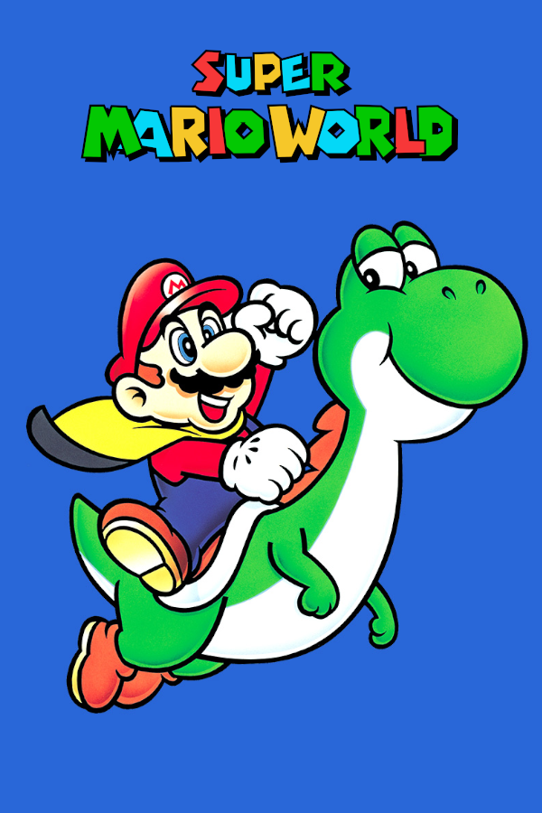

Super Mario World
Super Mario World
Details
|  | |
| Playtime | Not Played |
| Last Activity | Never |
| Added | 4/29/2025 6:52:10 |
| Modified | 4/29/2025 23:30:27 |
| Completion Status | Not Played |
| Library | Playnite |
| Source | |
| Platform | Nintendo SNES |
| Release Date | 8/16/2023 |
| Community Score | |
| Critic Score | 92 |
| User Score | |
| Genre | Platform |
| Developer | Nintendo EAD |
| Publisher | Nintendo |
| Feature | Controller Support Single Player |
| Links | PCGamingWiki IGDB MobyGames Wikipedia |
| Tag | [People] artist: Shigefumi Hino [People] composer: Koji Kondo [People] designer: Hideki Konno [People] designer: Katsuya Eguchi [People] director: Takashi Tezuka [People] producer: Shigeru Miyamoto [People] programmer: Toshihiko Nakago |
Description
Super Mario World, known in Japan as Super Mario World: Super Mario Bros. 4, is a 1990 platform game developed by Nintendo EAD and published by Nintendo for the Super Nintendo Entertainment System (SNES). The player controls Mario on his quest to save Princess Peach and Dinosaur Land from the series' antagonist Bowser and the Koopalings. The gameplay is similar to that of earlier Super Mario games; players control Mario through a series of levels in which the goal is to reach the goalpost at the end. Super Mario World introduces Yoshi, a ridable dinosaur who can eat enemies and spit some of them out as projectiles.
Nintendo Entertainment Analysis & Development developed the game, led by director Takashi Tezuka and producer and series creator Shigeru Miyamoto. It is the first Mario game for the SNES and was designed to make the most of the console's technical features. The development team had more freedom compared to the series installments for the Nintendo Entertainment System (NES). Yoshi was conceptualised during the development of the NES games but was not used until Super Mario World due to hardware limitations.
Super Mario World is often considered one of the best games in the series and is cited as one of the greatest video games ever made. It sold more than twenty million copies worldwide, making it the best-selling SNES game. It also led to an animated television series of the same name and a 1995 prequel, Yoshi's Island. The game has been re-released on multiple occasions: It was part of the 1994 compilation Super Mario All-Stars + Super Mario World for the SNES and was re-released for the Game Boy Advance as Super Mario World: Super Mario Advance 2 in 2001, on the Virtual Console for the Wii, Wii U, and New Nintendo 3DS consoles, and as part of the Super NES Classic Edition. Both the SNES and GBA versions were rereleased for Nintendo Switch as part of the Nintendo Classics service.
Gameplay
Super Mario World is a 2D side-scrolling platform game in which the player controls Mario or Luigi, the protagonists of the game. The game has similar gameplay to earlier games in the Super Mario series – Super Mario Bros., Super Mario Bros. 2, and Super Mario Bros. 3 – but introduces new elements. As well as dashing and jumping, the player can also fly or float with the aid of the Cape Feather and P-Balloon and can execute the new Spin Jump move, which allows the player to crush enemies, bounce off normally-invulnerable ones safely or break certain blocks, with the latter only being possible if the player has a power-up active. The game has 96 level exits in total.
The player navigates through the game via two game screens: an overworld map and a side-scrolling course (some of which scroll automatically). The overworld map displays an overhead representation of the current world and has several paths leading from the world's entrance to a castle. Paths connect to action panels, fortresses, ghost houses, castles, and other map icons, allowing players to take different routes to reach the world's goal. Moving the on-screen character to an action panel or castle grants access to that course. The majority of the game takes place in 2D linear levels, populated with obstacles and enemies, which involves the player traversing the stage by dashing, jumping, and dodging or defeating enemies. The player is given a number of lives, which are lost if Mario comes into contact with an enemy while Small Mario, falls off the screen, gets crushed, touches lava, or runs out of time. The game ends when the player runs out of lives, although the player can continue from the most recent save point (a successfully completed castle, fortress or haunted house) by selecting "Continue". Each world features a final stage with a boss to defeat; each of the seven worlds features fortresses controlled by one of the Koopalings, and the player also battles Bowser in his castle in the seventh and final world. Super Mario World includes a multiplayer option which allows two players to play the game by alternating turns at navigating the overworld map and accessing stage levels; the first player controls Mario, while the second player controls his brother, Luigi.
In addition to the power-ups from previous games, such as the Super Mushroom and Fire Flower, Super Mario World has a new power-up named the Cape Feather, which gives Mario a cape and the ability to fly, glide in the air, and use the cape as a sail. The game also introduces the ability to "store" an extra power-up in a box at the top centre of the screen. For example, if the player obtains a Fire Flower or a Cape Feather, then a Super Mushroom will appear in the box. Collecting a star grants Mario temporary invincibility from minor dangers. However, it does not protect the player from falling into lava or off the screen, nor if the player runs out of time. If Mario gets hit by an enemy, the stored item in the box will automatically drop. Alternatively, the player can manually release the stored item at any time.
The game introduces Yoshi, a dinosaur companion Mario can ride who is able to eat most enemies. If Yoshi attempts to eat a Koopa or its shell, he can spit it out and fire it at enemies. If the player fails to spit the shell out within a certain amount of time, Yoshi will swallow it, rendering it useless. When holding any Koopa shell in his mouth, Yoshi gains the ability that corresponds to its color: a blue shell enables Yoshi to fly, a yellow shell causes him to emit dust clouds that defeat nearby enemies, and a red shell allows him to produce three fireballs that defeat enemies. Flashing Koopa shells produce all three abilities, while green shells produce none. The default Yoshi is green, but the game also has hidden blue, yellow, and red Yoshis; the player can obtain each colored Yoshi by finding its egg in the Star World areas and feeding it either five enemies, a Super Mushroom, a Fire Flower, a Cape Feather, or a Starman causing the baby Yoshi to mature.
Although the main objective is to navigate through seven worlds to reach the end of the game, the player can beat the game much faster by using secret Star Road routes. To access a hidden world, the player needs to find keys scattered throughout the game's levels. When a key is found, it must be brought to a keyhole to unlock either a new level or a Star Road. Exploring these secret stages can lead to other stages, such as the Special World. Completion of the Special Zone permanently changes some of the enemies' sprites and alters the overworld map's color scheme.
Plot
The plot of Super Mario World is detailed in the instruction booklet. After bringing peace to the Mushroom World in Super Mario Bros. 3, the brothers Mario and Luigi decide to go on vacation with Princess Toadstool to a place called Dinosaur Land, a prehistoric-themed world swarming with dinosaurs and other enemies. While resting on the beach, the princess is captured by Bowser. When Mario and Luigi wake up, they try to find her and, after hours of searching, come across a giant egg in the forest. It suddenly hatches and out of it comes a young dinosaur named Yoshi, who tells them his dinosaur friends have also been imprisoned in eggs by Bowser's kids, the evil Koopalings. Mario and Luigi soon realise that Bowser's forces must have captured Toadstool as well. Mario, Luigi, and Yoshi set out to rescue the princess and Yoshi's dinosaur friends, traversing through Dinosaur Land for Bowser and his Koopalings. To aid him, Yoshi gives Mario a cape as they begin their journey.
Bowser receives news of Mario and Luigi's approach and dispatches his Koopalings to dispose of them. After the brothers defeat the children and rescue Yoshi's friends, they eventually reach Bowser's Castle, where they fight him in a final battle. They send Bowser flying into the sky and save Princess Toadstool, restoring peace to Dinosaur Land.
Development
The game was directed by Takashi Tezuka, while Shigeru Miyamoto, the creator of both Super Mario and The Legend of Zelda, served as producer. Shigefumi Hino took the role of graphics designer. Nintendo Entertainment Analysis & Development handled development with a team of ten people, including three main programmers and a character designer, most of whom had worked on past Super Mario titles. In a retrospective interview, the core team said Miyamoto wielded the most authority during development.
Super Mario World was the first Mario series game developed for the then-upcoming Super Nintendo Entertainment System (SNES). As such, the team anticipated some difficulty in working with new and more advanced hardware. According to Tezuka, the software tools were not yet fully developed, and the team had to "go along with starting something new". Miyamoto acknowledged the team no longer had restrictions on certain mechanics such as scrolling and the number of colours they could implement. As a hardware experiment, the team ported Super Mario Bros. 3 to the SNES. However, it felt like the same game to them, despite the improved colours and sprites. After that, Miyamoto realised the team's goal would be to use the new hardware to create something "totally new".
Miyamoto said he had wanted Mario to have a dinosaur companion ever since Super Mario Bros., but Nintendo engineers could not add such a character into the game due to the limitations of the Nintendo Entertainment System (NES). The inspiration for Yoshi can be traced back even further; Miyamoto designed a green dragon for the 1984 game Devil World which shared many similarities with Yoshi. During the development of Super Mario Bros. 3, Miyamoto had a number of sketches around his desk, including an image of Mario riding a horse. As development of Super Mario World progressed, the team opted to set the game in a "dinosaur land", so Tezuka asked designer Shigefumi Hino to draw a reptile-like creature based on Miyamoto's sketches. Hino originally produced a design that Tezuka deemed too reptilian, and "didn't really fit into the Mario world", so he encouraged the designer to create a "cuter" character. Tezuka speculated that Miyamoto's love of horse riding, as well as country and western themes, influenced Yoshi's creation.
Reflecting on how he had created different melodies for Super Mario Bros. 3, composer Koji Kondo decided to reuse the same themes for Super Mario World, albeit in a rearranged form. By doing this, he assumed players would be able to recognise the same melodies, while exposing them to new variations of music as they progressed through the game. As Super Mario World was the first game developed for the SNES, Kondo felt "overjoyed" at being able to compose music by using eight sounds at once. To express the technological novelty of the new console, he used several different instruments, implementing them all one after the other in the game's title song. As development progressed, Kondo grew concerned over how people would react to his unusual combinations of instruments as he noted the use of more traditional square waves and triangle waves had "gained acceptance" with consumers. For the game's sound effects, Kondo decided to use a variety of musical instruments, as opposed to square waves, to emphasise that the game used traditional technology with a hybrid of new materials. It took Kondo around a year and a half to write all the music for the game.
Super Mario World was produced during the console wars – a result of the rivalry between Nintendo's SNES and Sega's two-year-old Mega Drive system – which outsold the console and led to intense competition between the two, being the first time since December 1985 Nintendo did not lead the market though it eventually overtook Sega. Sega's mascot, Sonic the Hedgehog, was seen by many as a faster and "cooler" alternative to Mario.
Release
Super Mario World was first released in Japan on 21 November 1990 under the name of Super Mario World: Super Mario Bros. 4. It was one of two launch games for the SNES in Japan, along with F-Zero. The game was released in North America on 23 August 1991. Nintendo also issued a version for arcade cabinets so players could try the game before buying it.
Re-releases
The game was re-released in a special version of Super Mario All-Stars, Super Mario All-Stars + Super Mario World, as a pack-in game for the SNES in December 1994. All-Stars contains enhanced remakes of the first four Super Mario games released for the NES: Super Mario Bros., Super Mario Bros. 2, Super Mario Bros. 3 and Super Mario Bros.: The Lost Levels. In contrast to the other games in the collection, Super Mario World is largely identical to the original version, but Luigi's sprites were updated to make him a distinctive character rather than a palette swap of Mario.
Super Mario World was ported to the Game Boy Advance as Super Mario World: Super Mario Advance 2 between 2001 and 2002. It features the same number of levels as the original, Luigi as a playable character in single player with his characteristic behaviour and appearance from Super Mario Bros. 2, Game Link Cable support for four players in the Mario Bros. Classic mode, and the ability to save anywhere, rather than just after beating Ghost houses or Castles. Difficulty is lowered as being hit by an enemy no longer makes him lose all current power ups. Additionally, the alternate overworld map and enemy sprites that was normally unlocked by beating the Special World is now instead unlocked by finding every exit in each level. It received positive reviews; critics enjoyed its new inclusions and retention of the SNES original's "feel". GameSpot named it the best video game of February 2002.
The SNES version was released on the Wii's Virtual Console in Japan on 2 December 2006, in the United States on 5 February 2007, and in Europe on 9 February 2007. It was released for the Wii U in North America and Japan on 26 April 2013, and in Europe on 27 April 2013, along with the full launch of the Wii U Virtual Console. On March 3, 2016, the game was released for the Virtual Console service of the New Nintendo 3DS. Super Mario World was also one of the 21 SNES games included in the Super NES Classic Edition released in September 2017. On 5 September 2019, Nintendo released Super Mario World on their Nintendo Classics service as a launch title, followed by the Super Mario Advance 2 version on 25 May 2023.
Reception
Nintendo has sold 20.61 million copies of the game worldwide, making it the best-selling game for the SNES. In the United States, Super Mario Advance 2 for the Game Boy Advance sold 2.5 million copies and earned $74 million in revenue by August 2006. During the period between January 2000 and August 2006, it became the second highest-selling portable game in the United States.
Super Mario World received critical acclaim. In December 2019, review aggregator GameRankings ranked Super Mario World as the 78th highest-rated game of all time, with an aggregate score of 94% based on nine reviews.
The visuals and presentation were two of the most praised aspects of the game. After its release, Rob Swan of Computer and Video Games noted that the graphics were an excellent example of what the then-new SNES was capable of, while in the same review, Paul Glancey similarly remarked that the visuals were stunning, and he was grateful the game came free with the console. Four reviewers echoed this in Electronic Gaming Monthly, but commented that the game took little advantage of the SNES's capabilities compared to other games available for the system. Retrospective reviewers agreed the game's visuals were still of a high quality. Karn Bianco from Cubed3 enjoyed the game's relaxed visual style, and praised Nintendo for keeping everything "nice and simple" designing a game perfect for children. IGN's Lucas Thomas heralded the game as a significant leap over the visuals of the 8-bit era, but in retrospect felt it did not distinguish itself from being a graphically-upgraded continuation of its predecessor, Super Mario Bros. 3. In contrast, Frédéric Goyon of Jeuxvideo.com thought the game brought out the full potential of the SNES (albeit less so than Donkey Kong Country), and Nadia Oxford from USGamer also felt the game was a less rigid version of its predecessor. AllGame's Skyler Miller and Alex Navarro of GameSpot both praised the game's well-drawn characters, colourful visuals and pleasing animation. Morgan Sleeper of Nintendo Life said Super Mario World was the "graphical holy grail" that retro-styled games aspire to, and he insisted that its design holds up well today.
Critics commended the game's replay value and unique gameplay in comparison to older Super Mario games. Four reviewers in Electronic Gaming Monthly praised the game's number of secrets and diversity among its levels, expressing appreciation that Nintendo did not recycle assets from Super Mario Bros. 3. Swan and Glancey enjoyed the addictive gameplay and the vast number of levels, while Dan Whitehead of Eurogamer lauded the game's divergence from linear platforming and asserted that Super Mario World was an evolutionary leap for gaming in general. Likewise, Goyon appreciated the option of being able to finish the game by using alternative routes. Bianco opined that the game was "one of the smoothest platformers in existence" while Thomas thought its "masterful" and innovative level design enhanced the overall experience. Navarro similarly felt the game featured some of the best and most challenging levels the series has offered thus far, saying "nothing about the game feels out of place or superfluous". Miller considered the game's overall length to be its strongest aspect, while Oxford thought Super Mario World's gameplay could be both straightforward and complex, owing to the myriad of secrets the game contained. In retrospect, Sleeper believed the game's biggest achievement was its level design, calling it an "unrivalled master class" with a constant sense of momentum.
The game's audio was also well received by critics. Swan believed the game utilised the SNES' PCM chip to its fullest potential, and both he and Glancey agreed that the game's sound effects were "mindblowing". Thomas labelled the soundtrack "another one of Koji Kondo's classics," but in hindsight remarked that it was not as memorable as his earlier work. Goyon praised the originality of the game's soundtrack, and thought the technical contribution of the SNES allowed players to enjoy a "globally magnificent" composition. Both Goyon and Jason Schreier of Kotaku felt its rhythmic sound effects were important and helped to reinforce the game's atmosphere. Miller liked Super Mario World's upbeat music, and particularly enjoyed the echoing sound effects heard when Mario was underground – a sentiment shared by other reviewers. Both Sleeper and Navarro wrote that the game featured the best music in the entire Super Mario series, with Sleeper praising Kondo's "timeless" soundtrack and memorable melodies.
Awards
The game received 1991 Game of the Year awards from Nintendo Power and Power Play. Many retrospective critics declared Super Mario World one of the greatest video games of all time. In 2009, a poll conducted by Empire voted it "the greatest game of all time". In 2009, Official Nintendo Magazine placed the game 7th in a list of the greatest Nintendo games of all time. In its final issue in October 2014, Official Nintendo Magazine ranked Super Mario World the third-greatest Nintendo game of all time, behind The Legend of Zelda: Ocarina of Time and Super Mario Galaxy. In 2012, Nintendo Power similarly named Super Mario World the fifth greatest game of all time, a step up from its eighth best ranking in their 2006 poll. The game has appeared on several "best video games of all time" lists such as those from Electronic Gaming Monthly, Game Informer, Retro Gamer and GameSpot. In 2007, Retro Gamer ranked it as the best platform game of all time, while USgamer listed it as the best Super Mario platform game ever in 2015. In 1996, GamesMaster ranked Super Mario World 3rd on their "The GamesMaster SNES Top 10" list. In 1995, Total! listed the game 11th on its Top 100 SNES Games, at the time they opined Super Mario World is "a contender for the best game ever."
Legacy
As a pack-in game for the SNES, Super Mario World helped popularise the console, and became the best-selling game of its generation. Shigeru Miyamoto has said that Super Mario World is his favourite Mario game.
Yoshi became one of the most important characters in the Mario franchise, re-appearing in later Super Mario games and in nearly all Mario sports and spin-off games. Yoshi appears as the main playable character in Super Mario World's 1995 prequel Super Mario World 2: Yoshi's Island, which helped lead to multiple video games focused on the character. A Super Mario World clone, Super Mario's Wacky Worlds, was in development for the Philips CD-i device by NovaLogic from 1992 to 1993, but was cancelled because of the console's commercial failure. In a poll conducted in 2008, Yoshi was voted as the third-favourite video game character in Japan, with Cloud Strife and Mario placing second and first.
DIC Entertainment produced an animated series of the same name, consisting of thirteen episodes, which ran on NBC from September to December 1991. Super Mario World has a large ROM hacking scene, with fans using applications such as Lunar Magic to create levels and insert new graphics, music, and mechanics; Kaizo Mario World is notable for being featured in many Let's Play videos and popularizing the word Kaizo to signify hacks of extreme difficulty. In a similar way, Super Mario World is one of the four games whose assets are available in Super Mario Maker, a custom level creator released for the Wii U in 2015, in its port to Nintendo 3DS in 2016, and its 2019 sequel. The latter adds new snow and nighttime themes for Super Mario World levels accompanied by new music composed by Kondo.